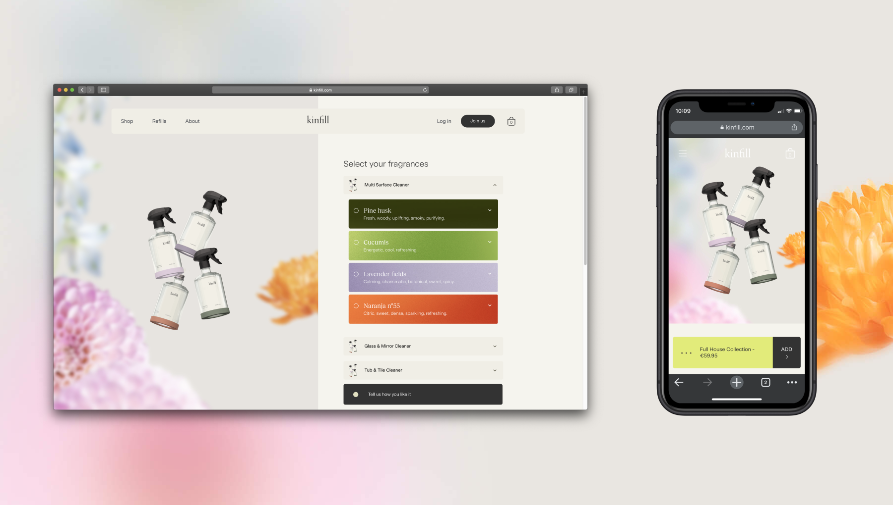

Kinfill
Let's be honest: cleaning products are boring. Something you buy, put away in a cupboard and not think about at all — and very chemical in nature. Kinfill, a Rotterdam based company, aims to make a change. Kinfill offers reusable glass bottles that can be filled up with cleaning concentrate. At Connect Holland, I worked with Kinfill on redesigning their website, while our technical team took care of performance issues and made Kinfill's logistical processes future-proof.
Visual cleanup
By selecting new fonts, colors and form language the website has been turned into more of an editorial experience by combining these choices with beautiful imagery of the Kinfill products. Tailoring to the habits of online shopping, the website has been optimized for desktop and mobile both design- and performance-wise.
Kay
To give the experience a personality, Kay was developed. Kay is the personification of Kinfill in the website. Shaped like a bar that is continually visible in the website, Kay communicates with the user and engages them in taking action by presenting users with CTA's. Ofcourse a good friend also listens, so that's what Kay does. We designed three different states for Kay: listening, talking and a state requiring action from the user.

Result
The Kinfill website is online and can be viewed on kinfill.com.